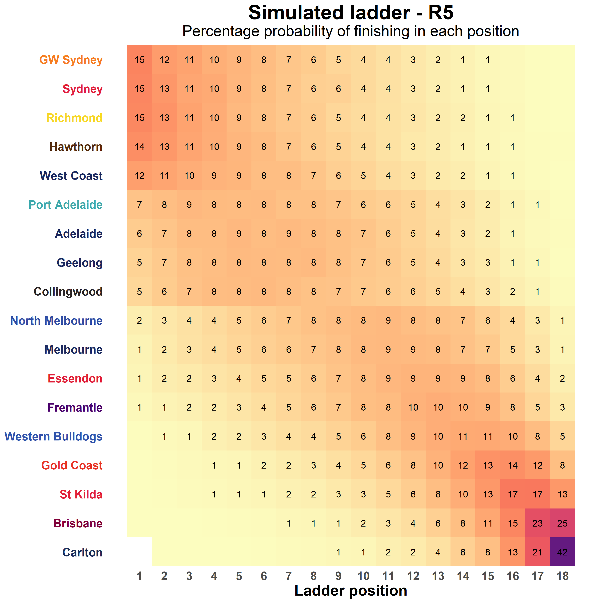
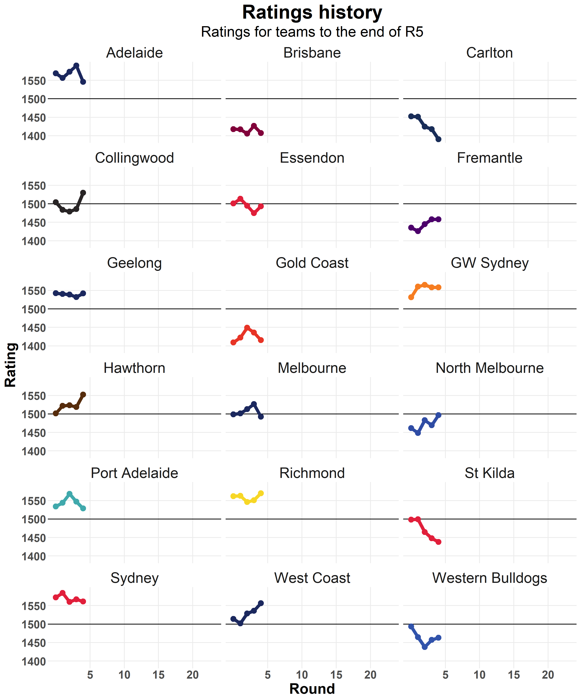

My AFL-Elo model
Over the last few years I have followed a lot of the work done by FiveThiryEight, particularly their attempts to model and predict sport. More recently I have discovered there is a community of people trying to do similar things for the AFL, including The Arc, Squiggle, Matter of Stats and Hurling People Now.
Many of these modelling projects are based around the Elo system. If you haven’t heard of it before this model is a ranking system originally designed for chess by a Hungarian physicist. In the simplest form each player (or team) is assigned a ranking. When a match is played you can estimate a win probability based on the differences between the rankings. The rankings are then adjusted based on the result in such a way that unexpected results cause bigger changes than those that are closer to what was predicted. This model is relatively naive and simple to implement, no knowledge of the players or teams themselves is required, just the results of matches, but can still produce good predictions.
Given this I thought it would be a good place to start. My version of the model is closely based on the one described by The Arc here. There were a few different things I wanted to try but (as always) everything took longer than I planned, so what I have done in the end is very similar. The one area where I have done things differently is the process used to select the parameters of the model. This part wasn’t really described in the post on The Arc so I was left to my own devices. Here are brief descriptions of the parameters, but if you are interested I suggest you check out the outline of the model on The Arc which has a lot more detail:
- New team rating - The starting rating for new teams that enter the competition (Gold Coast and GWS). Original teams start with a rating of 1500.
- New season adjustment - Amount to regress to the mean at the beginning of a new season
- HGA alpha - Weighting given to travel distance when calculating home ground advantage (HGA)
- HGA beta - Weighting given to ground experience when calculating HGA
- p - Controls how win probabilities are converted to margins
- k - Controls how differences between predicted and actual results affect ratings. Greater values cause greater changes, meaning the the model reacts quicker to what has happened but also that it is more unstable. In many ways this is the critical parameter for the Elo model. For this version of the model we use three different values:
- Early - Used for the first five rounds of the regular season
- Normal - Used for the remainder of the regular season
- Finals - Used for finals matches
To select these parameters I chose to use a genetic optimisation algorithm. Partly because it is potentially able to explore a wider parameter space, but also because I think they are cool. To do this we need a measure of fitness that we are aiming for. For sport predictions there are generally two things we want to know, who is going to win and by how much. Estimating these can often be best done using different sets of parameters. For this reason I ran the optimisation procedure three times, once optimising for win prediction accuracy, once optimising for the mean absolute error in predicting the margin and once for a 50/50 balance between the two. Each optimisation procedure was run for 100 generations with 100 individuals in each generation, training the model on all AFL games from 1997 to 2016 and assessing performance on the games from 2000 to 2016. This leaves the 2017 season as a validation set to check the selected parameters. Here the best performing parameter sets from each of the optimisations compared to the default parameters based on The Arc:
| Default | Margin | Balanced | Prediction | |
|---|---|---|---|---|
| NewTeamRating | 1090 | 1292 | 1284 | 1106 |
| NewSeasonAdjustment | 0.1 | 0.33 | 0.39 | 0.54 |
| HGA_Alpha | 6 | 1.33 | 2.89 | 2.05 |
| HGA_Beta | 15 | 12.89 | 2.1 | 5.68 |
| p | 0.0464 | 0.027 | 0.0204 | 0.078 |
| k_Early | 82 | 92 | 92 | 55 |
| k_Normal | 62 | 62 | 42 | 38 |
| k_Finals | 72 | 33 | 80 | 43 |
| Margin2016 | 29.9 | 29.82 | 29.76 | 32.51 |
| Predict2016 | 0.68 | 0.68 | 0.68 | 0.69 |
| Margin2017 | 29.09 | 28.94 | 29.23 | 30.18 |
| Predict2017 | 0.61 | 0.63 | 0.61 | 0.62 |
Based on the 2017 results I decided to go with the Margin model. Despite being optimised for margin accuracy it also performed the best at predicting results in 2017. This might suggest that the optimisation procedure is not ideal, but that is a problem for another day… Encouragingly, all three of my models outperform the defaults, which suggests that the results will be somewhere in the range of the The Arc, and I am more than happy with that.
If you are interested in how I have done things I have made an aflelo R package which you can install from GitHub and my analysis and predictions for each round will be available here.
Now that I have a model I can use it to make predictions about the 2018 season!
Round 5
Summary
| Team | Rating | Change | Points | Percentage | ProjRating | ProjPoints | Top2 | Top4 | Top8 |
|---|---|---|---|---|---|---|---|---|---|
| Richmond | 1570 | 19 | 12 | 130 | 1555 | 56.5 | 28.2 | 49.8 | 78.9 |
| Sydney | 1561 | -6 | 12 | 108 | 1546 | 56.9 | 27.9 | 49.4 | 79.0 |
| GW Sydney | 1558 | 0 | 12 | 140 | 1544 | 56.3 | 27.5 | 48.7 | 79.4 |
| West Coast | 1556 | 21 | 12 | 136 | 1545 | 54.7 | 23.0 | 42.7 | 74.9 |
| Hawthorn | 1553 | 34 | 12 | 127 | 1539 | 56.3 | 26.9 | 48.2 | 78.7 |
| Adelaide | 1546 | -44 | 8 | 107 | 1535 | 50.7 | 13.3 | 29.7 | 63.1 |
| Geelong | 1542 | 10 | 8 | 109 | 1532 | 50.0 | 12.0 | 27.6 | 61.3 |
| Collingwood | 1530 | 44 | 8 | 107 | 1521 | 49.6 | 11.1 | 26.8 | 59.1 |
| Port Adelaide | 1529 | -18 | 12 | 117 | 1522 | 51.9 | 15.4 | 32.5 | 64.6 |
| North Melbourne | 1497 | 28 | 8 | 134 | 1499 | 43.2 | 4.7 | 12.6 | 38.4 |
| Essendon | 1494 | 18 | 8 | 99 | 1499 | 40.7 | 3.0 | 8.5 | 28.2 |
| Melbourne | 1493 | -34 | 8 | 98 | 1495 | 43.1 | 3.8 | 11.3 | 35.5 |
| Western Bulldogs | 1463 | 6 | 4 | 72 | 1470 | 36.0 | 0.7 | 3.2 | 16.3 |
| Fremantle | 1458 | 0 | 8 | 89 | 1466 | 39.3 | 1.8 | 5.9 | 23.3 |
| St Kilda | 1438 | -10 | 4 | 68 | 1456 | 29.4 | 0.2 | 1.1 | 6.4 |
| Gold Coast | 1415 | -21 | 8 | 83 | 1433 | 32.7 | 0.4 | 1.6 | 9.1 |
| Brisbane | 1407 | -19 | 0 | 64 | 1426 | 24.3 | 0.1 | 0.3 | 2.7 |
| Carlton | 1390 | -28 | 0 | 61 | 1415 | 20.5 | 0.0 | 0.1 | 1.2 |
Predictions

Projections
Ladder

Premiership points

History
